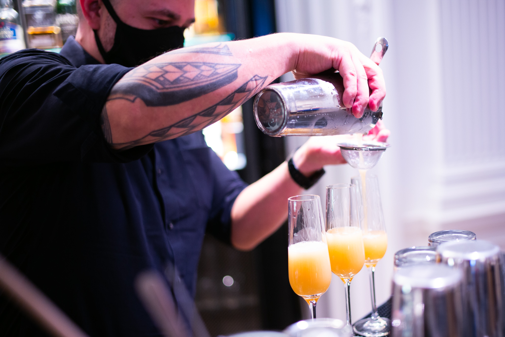

Personal Menu
Winter 2022
Miscellaneous Bar's and Restaurant's Menus
Amor Y Amargo's Fall 2021 Cocktail Menu
Amor Y Amargo's Winter 2022 Cocktail Menu
The Patterson's 2020 Cocktail Menu
I would also like to take this moment to acknowledge some sources I have used to learn about new cocktails, techniques, and history.
The Educated Barfly's Youtube Channel
Steve the Bartender's Youtube Channel
Anders Erickson's Youtube Channel
Apotheke's Book by Christopher Tierney and Erica Brod
Amaro Book by Brad Thomas Parson
I'm Just Here For The Drinks Book by Sother Teague
DJ Suan's (who helped me get started with this hobby) Twitter
